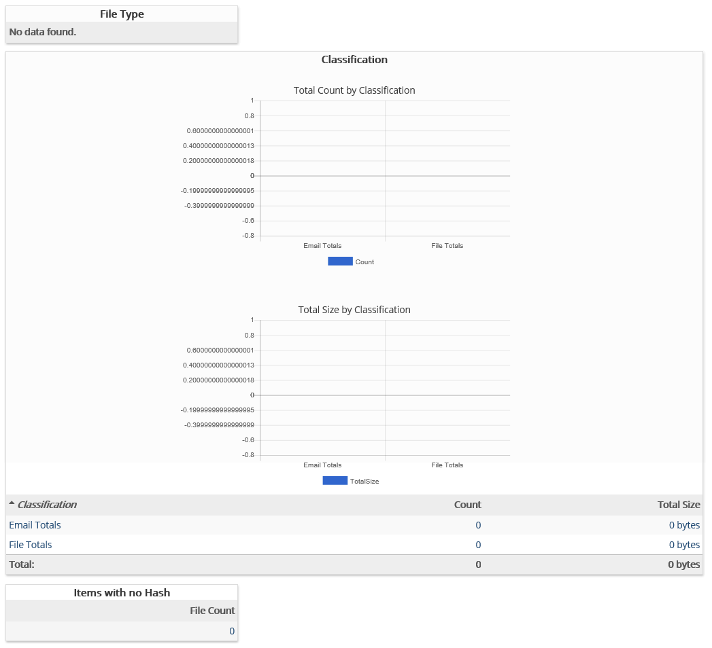

This report provides a summary of items not processed due to de-duplication settings.
Complete the following selections:
Report Title: A report title is selected by default; change the title if needed.
Data Extract Job: (Optional) Select the data extract job for which the report is to be generated. If a specific job is not selected, the report will run against the entire case.
